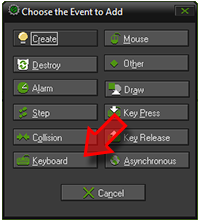
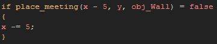
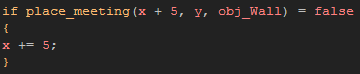
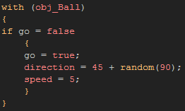

Tutorial
Page 5 of 13
Creating The Bat
A breakout game needs a bat for the player to move and a ball to hit and destroy the bricks with. Let's start with the bat object...
As before, create a new object, assign it the sprite that we added in previously and give it a descriptive name ("obj_Bat" for example). Now we will add movement into
the object using the Keyboard Events. To start with we will use the arrow keys, so add a keyboard event and choose the first option in the pop-up list <Left>:

This has added a keyboard event for the left arrow key. There are actually three different keyboard events, with the Pressed and Released events only being triggered
once for each of the key actions, while the ordinary keyboard event (that we have used) is continuous and so any code in it will be run each step of the game while the key is being
held.
Drag a code action (Control Tab > Code) into this new event and add the following code to it:

The first part of the code does a check to the left of where the bat instance currently is to see if moving the bat to that new position would place it into a collision with the wall object. If there
is no collision detected, the bat is moved to the left by 5 pixels. Now, create a new Keyboard Event for the <Right> arrow key and add this code:

This code is exactly the same as that used previously for moving left, only now it is doing the check and movement to the right (remember, in GameMaker position is defined as an x and y
position within the room, with 0x, 0y being the top left corner. So, +x is to the right and -x is to the left, +y is down and -y is up).
Finally, we are going to add some control code for starting the game and firing off the ball object (which we will create in the next step). For this we need yet another keyboard Event for the
<Space> key and we will add the following code into it:

This code may seem more complex, but it is really quite simple... it says "with the ball object, if the variable 'go' is false, set it to true and give the ball object a speed of 5px per step and a random direction
between 45 and 135 degrees". The "with" function is very powerful and allows you to run code in instances other than that which has the code-block and as you can see in this case we are using it to shoot the
ball object at the start of the game.
Click on the Next button to go to the next page of the tutorial.